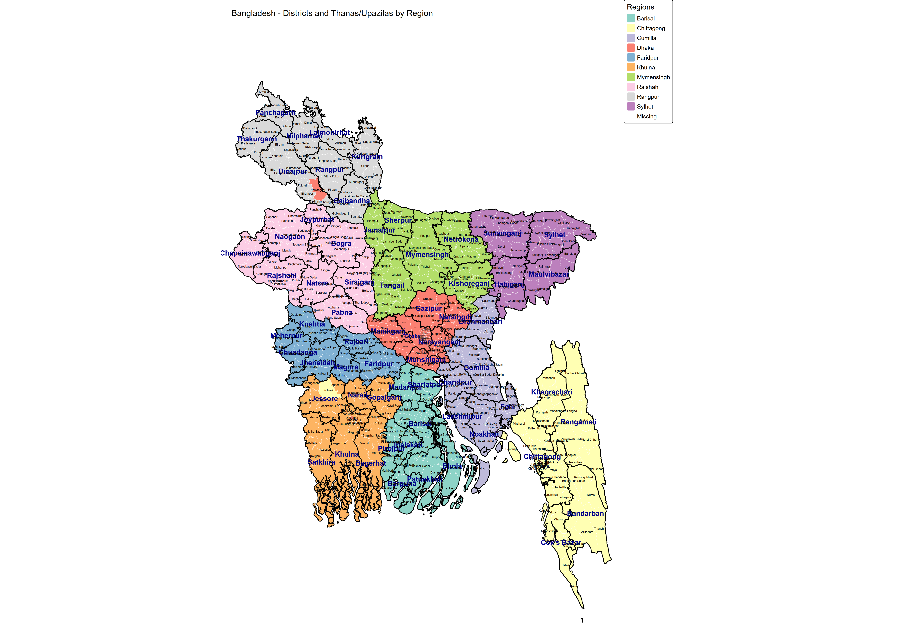

🗺️ Bangladesh Regional Maps
Administrative divisions organized into 10 custom regions
10
Regions
64
Districts
544
Thanas/Upazilas
📍 The 10 Regions
Barisal (9 districts, 39 thanas)
Chittagong (6 districts, 58 thanas)
Cumilla (7 districts, 44 thanas)
Dhaka (7 districts, 56 thanas)
Faridpur (7 districts, 35 thanas)
Khulna (6 districts, 46 thanas)
Mymensingh (6 districts, 58 thanas)
Rajshahi (9 districts, 69 thanas)
Rangpur (8 districts, 57 thanas)
Sylhet (5 districts, 36 thanas)
64 Districts in 10 Regions

Resolution: 4200 × 3000 pixels (300 DPI)
Size: 14 × 10 inches
Features: District-level map with labels and bold boundaries
All Thanas with Labels (High Resolution)

Resolution: 5400 × 3800 pixels (300 DPI)
Size: 18 × 12.67 inches
Features: All thanas labeled with district borders. Dhaka district has smaller labels to avoid clutter, other districts have larger readable labels.
{kind=link}
📊 Data Source: Bangladesh Package (R) with custom region classifications
Generated using R, tmap v3, sf (Simple Features), and dplyr